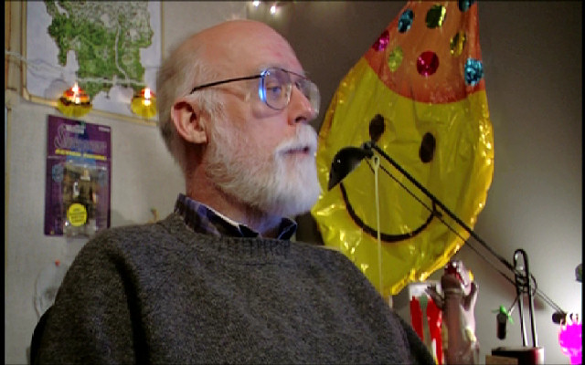
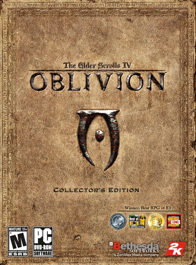

About Ken Rolston
Ken Rolston was the lead designer for the Elder Scrolls games and
expansions starting with Morrowind, but he left Bethesda after the
completion of Oblivion for what was thought to be permanent retirement
after about 25 years in the Gaming Industry. However, this only lasted
for about a year before he returned to work for Big Huge Games in
February of 2007 as the lead designer for Ascendant, which was
unfortunately canceled due to THQ's (Big Huge Games's owner) financial
difficulties. He has also designed a pair of pen-and-paper RPGs,
Paranoia and RuneQuest. Rolston also served as the lead creative
visionary for Kingdoms of Amalur: Reckoning, a single player RPG
designed by 38 Studios, a Baltimore subsidiary of Big Huge Games.

Ken Rolston is mostly known for his role as the lead designer for The
Elder Scrolls games, most notably Oblivion.

The Elder Scrolls IV: Oblivion, the fourth game in the Elder Scrolls
series, is set within the province of Cyrodiil, the heartland and
Imperial capital of Tamriel. Emperor Uriel Septim VII is assassinated in
flight from his own palace, but just before he dies he passes on to
you—the foreordained of his dreams—the mystic Amulet of Kings. The
adventure proper begins with the quest to find Uriel's lost and
illegitimate son—the only heir to the throne. In a world where the
forces of darkness seek their ultimate dominion over the ranks of man
and mer alike, you alone stand between the future of Tamriel and the
gates of Oblivion.